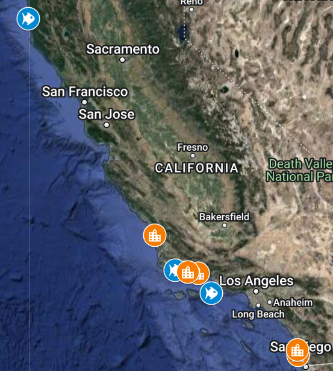
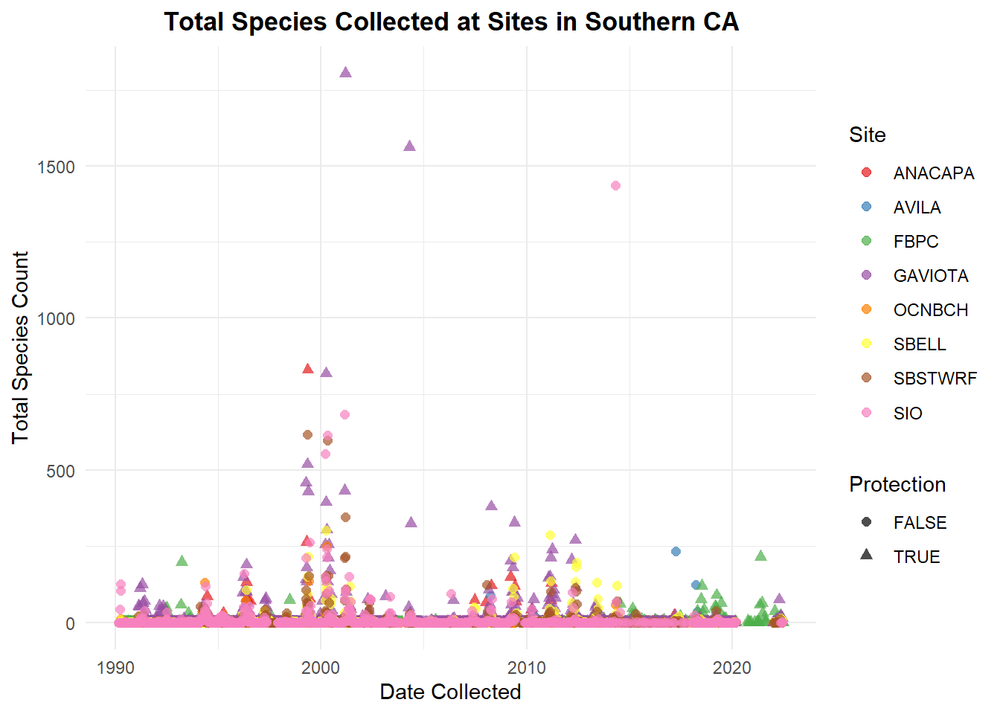
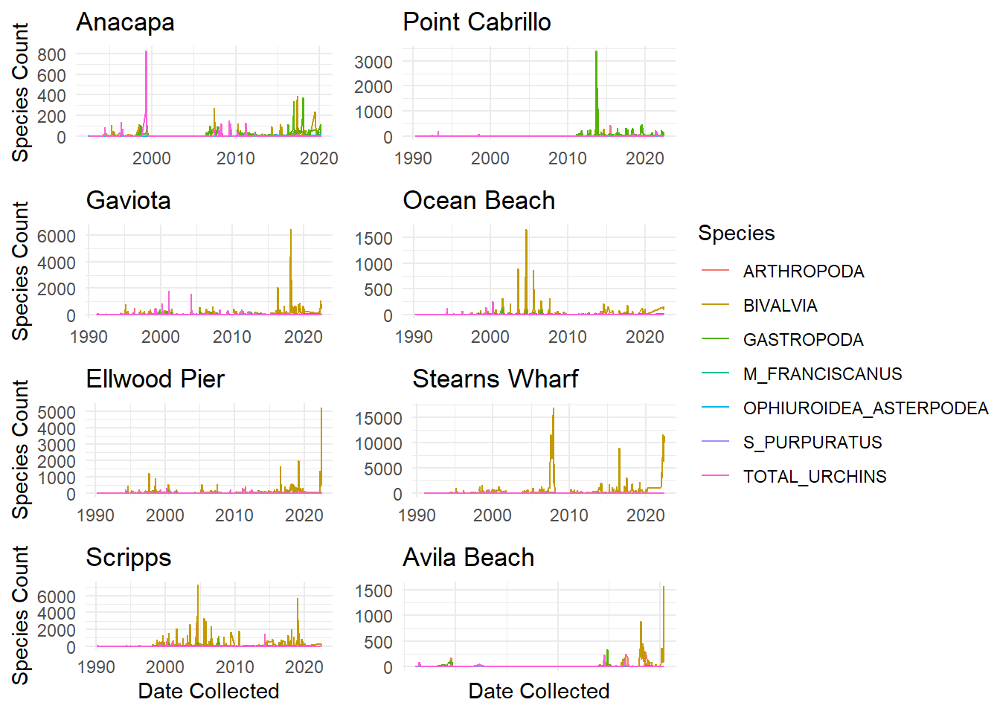
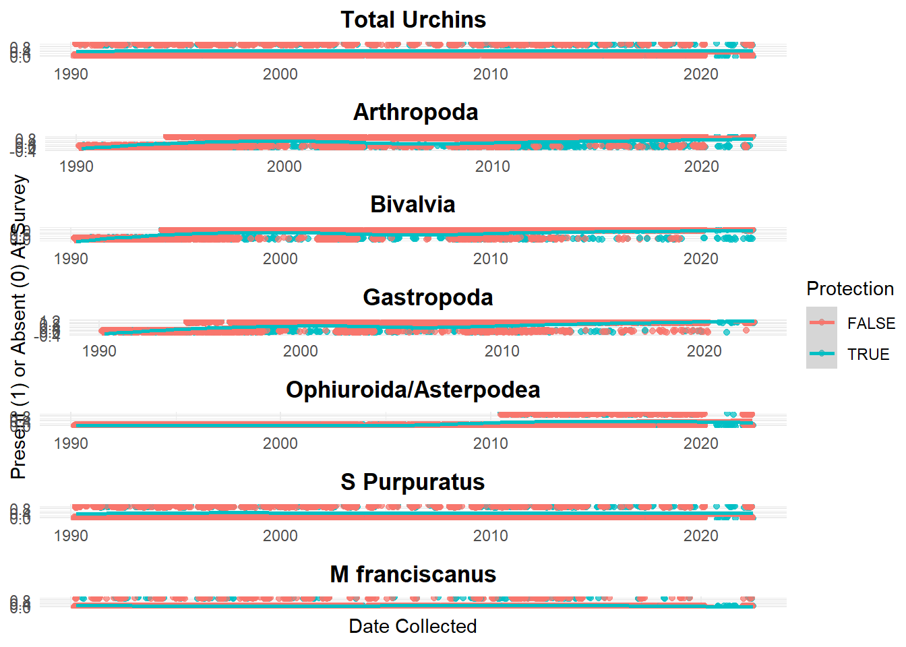

Show the code
## Import LTER data
UrchinsDF <- read_csv(here("posts", "2022-12-9-stats-proj", "Invertebrate_Settlement_All_Years_20220722.csv"), na = "-99999")I currently enjoy living near the beach in Santa Barbara, but this comes with inadvertent ecological impacts with coastal development increasing pollutants and high recreational use of the water. Questions arise: Does human development on land cause significant change in the species abundance of coastal waters? The aim of this project is to provide an understanding of sensitivities select species have to developed coastlines.
Data was used from the Santa Barbara Coastal Long Term Ecological Research dataset “Settlement of urchins and other invertebrates, ongoing since 1990.” This project collects counts on six taxonomic groups through regular summer surveys.
The survey locations are throughout southern California with one north of San Francisco. Each location is a pier, counts collected from the end of the pier in the littoral zone. The littoral zone is below the low-tide level and experiences the effects of tidal and longshore currents, and breaking waves.
Three of the piers are off protected coastal regions, the rest are populated and developed piers. The protected regions are all parks with minimal development and a marine conservation area protecting surrounding water: Gaviota Beach Pier with Kashtayit State Marine Conservation Area, Point Cabrillo Pier with the Point Cabrillo State Marine Reserve, Anacapa Island Pier with a variety of marine protected areas surrounding the Channel Islands chain. The maps below display the survey locations, 3 protected and 5 unprotected.

This data set explores a variety of species spanning different ecological functions:
Arthropoda: Phylum of lobsters, crabs, and barnacles which have an exoskeleton made of chitin and risks mineralizing in calcium carbonate, a risk of ocean acidification.
Bivalvia: Class belonging to phylum Mollusca, includes filter feeders such as clams, oysters, and mussels.
Gastropoda: Class belonging to phylum Mollusca including snails, conch, abalone, limpets, and whelks with a range from scavengers, predators, herbivores, and parasites.
Ophiuroidea/Asterpodea: Brittle stars and sea stars respectively belonging to phylum Echinodermata, these are carnivores, filter feeders, and scavengers.
S purpuratus: Pacific purple sea urchin, a sedentary species primarily feeding on algae.
M franciscanus: Red sea urchins, which eat kept and seaweed.
Total Urchins: Combines counts of the previous two, S purpuratus and M franciscanus.
This dataset was initially downloaded via DataOne website, link in the references. The metadata stated NA’s were written in the data as ‘-99999’, so I included this while importing the data.
## Import LTER data
UrchinsDF <- read_csv(here("posts", "2022-12-9-stats-proj", "Invertebrate_Settlement_All_Years_20220722.csv"), na = "-99999")The protection data was not immediately available, I had to create a data frame with the values 1 for protected, 0 for unprotected. Protection was determined by the location of the piers. A pier is labeled unprotected if located in populated developed areas such as Ocean Beach, San Diego; protected piers are located in undeveloped parks surrounded by marine protected areas, including Channel Islands National Park and Point Cabrillo State Marine Reserve.

## Create Protection data frame
ProtectionDF <- data.frame(
Fullname = c("Anacapa", "Point Cabrillo", "Gaviota", "Ocean Beach", "Ellwood Pier", "Stearns Wharf", "Scripps", "Avila Beach"),
SITE = c("ANACAPA", "FBPC", "GAVIOTA", "OCNBCH", "SBELL", "SBSTWRF", "SIO", "AVILA"),
Protection = c(1, 1, 1, 0, 0, 0, 0, 0)
)
kable(ProtectionDF, n = 8)| Fullname | SITE | Protection |
|---|---|---|
| Anacapa | ANACAPA | 1 |
| Point Cabrillo | FBPC | 1 |
| Gaviota | GAVIOTA | 1 |
| Ocean Beach | OCNBCH | 0 |
| Ellwood Pier | SBELL | 0 |
| Stearns Wharf | SBSTWRF | 0 |
| Scripps | SIO | 0 |
| Avila Beach | AVILA | 0 |
Here the two dataframes are joined so all of the survey rows are connected with a protection status based on location. Protection status is changed to be a binary TRUE/FALSE option, and the date class is changed. There are repeated surveys per day so these are collapsed down to one survey per day per site for my dataframe.
## Join and select column fields
Urchins <- left_join(UrchinsDF, ProtectionDF, by = "SITE") |>
select(SITE, Protection, DATE_RETRIEVED, ARTHROPODA, BIVALVIA, GASTROPODA, OPHIUROIDEA_ASTERPODEA, S_PURPURATUS, M_FRANCISCANUS, TOTAL_URCHINS)
## Set as date class
Urchins$DATE_RETRIEVED <- lubridate::mdy(Urchins$DATE_RETRIEVED)
## Collapse repeated surveys per day by site
Urchins <- Urchins |>
group_by(SITE, DATE_RETRIEVED) |> # Combine by date, per site
summarise(ARTHROPODA = sum(ARTHROPODA, na.rm = TRUE),
BIVALVIA = sum(BIVALVIA, na.rm = TRUE),
GASTROPODA = sum(GASTROPODA, na.rm = TRUE),
OPHIUROIDEA_ASTERPODEA = sum(OPHIUROIDEA_ASTERPODEA, na.rm = TRUE),
S_PURPURATUS = sum(S_PURPURATUS, na.rm = TRUE),
M_FRANCISCANUS = sum(M_FRANCISCANUS, na.rm = TRUE),
TOTAL_URCHINS = sum(TOTAL_URCHINS, na.rm = TRUE),
Protection = mean(Protection))
# Change class to TRUE/FALSE for use in ggplot shape aesthetic
Urchins$Protection <- as.logical(Urchins$Protection)Next the entire dataframe is pivoted to be longer along each Species, so now each species per survey has its own row for count. For later analysis, I use this longer dataframe to simplify the counts for each species to 1 or 0 for presence or absence. This is saved as a new dataframe and widened to return to a survey per row.
## Create Species Data Frame
SpeciesDF <- Urchins |>
pivot_longer(cols = c("ARTHROPODA", "BIVALVIA", "GASTROPODA", "OPHIUROIDEA_ASTERPODEA", "S_PURPURATUS", "M_FRANCISCANUS", "TOTAL_URCHINS"),
names_to = "Species",
values_to = "Count",
values_drop_na = TRUE) # Drop NA values
# Add a binary row for species presence
SpeciesDF$Present[SpeciesDF$Count >=1] <- 1
SpeciesDF$Present[SpeciesDF$Count ==0] <- 0
# Dataframe displays only binary presence for each species per survey
PresentDF <- SpeciesDF |>
select(-Count) |>
pivot_wider(values_from = "Present",
names_from = "Species")These initial visualizations can provide clues to trends in the data. This first plot shows the data distribution over time with total species count at each site, highlighting if protected or not. There are several major spikes, potential outliers, and many zeros. Overall this visualization is too crowded to infer any patterns.
TotalUrchins <- ggplot(Urchins, aes(x = DATE_RETRIEVED, y = TOTAL_URCHINS)) +
geom_point(aes(color = SITE, shape = Protection), alpha = .7, size = 2) +
theme_minimal() +
labs(title = "Total Species Collected at Sites in Southern CA",
y = "Total Species Count",
x = "Date Collected",
color = "Site", shape = "Protection") +
theme(plot.title = element_text(face = "bold",
hjust = .5)) +
scale_color_brewer(palette = "Set1")
TotalUrchins
Below is a series of maps of species abundance over time for each survey site. There are high spikes in this data with a lot of zeros, and does not appear linear in nature for any of the sites. There is also not a single site, protection status or species that is the solo cause of the data spikes.
## How does each species vary per site:
Ana <- SpeciesDF |>
filter(SITE == "ANACAPA") |>
ggplot(aes(x = DATE_RETRIEVED, y = Count, color = Species)) +
geom_line() +
theme_minimal() +
labs(title = "Anacapa",
x = NULL) +
ylab("Species Count")
FBPC <- SpeciesDF |>
filter(SITE == "FBPC") |>
ggplot(aes(x = DATE_RETRIEVED, y = Count, color = Species)) +
geom_line() +
theme_minimal() +
labs(title = "Point Cabrillo",
x = NULL,
y = NULL)
Gav <- SpeciesDF |>
filter(SITE == "GAVIOTA") |>
ggplot(aes(x = DATE_RETRIEVED, y = Count, color = Species)) +
geom_line() +
theme_minimal() +
labs(title = "Gaviota",
x = NULL) +
ylab("Species Count")
OB <- SpeciesDF |>
filter(SITE == "OCNBCH") |>
ggplot(aes(x = DATE_RETRIEVED, y = Count, color = Species)) +
geom_line() +
theme_minimal() +
labs(title = "Ocean Beach",
x = NULL,
y = NULL)
EL <- SpeciesDF |>
filter(SITE == "SBELL") |>
ggplot(aes(x = DATE_RETRIEVED, y = Count, color = Species)) +
geom_line() +
theme_minimal() +
labs(title = "Ellwood Pier",
x = NULL) +
ylab("Species Count")
SW <- SpeciesDF |>
filter(SITE == "SBSTWRF") |>
ggplot(aes(x = DATE_RETRIEVED, y = Count, color = Species)) +
geom_line() +
theme_minimal() +
labs(title = "Stearns Wharf",
x = NULL,
y = NULL)
Scrip <- SpeciesDF |>
filter(SITE == "SIO") |>
ggplot(aes(x = DATE_RETRIEVED, y = Count, color = Species)) +
geom_line() +
theme_minimal() +
labs(title = "Scripps") +
xlab("Date Collected") +
ylab("Species Count")
AV <- SpeciesDF |>
filter(SITE == "AVILA") |>
ggplot(aes(x = DATE_RETRIEVED, y = Count, color = Species)) +
geom_line() +
theme_minimal() +
labs(title = "Avila Beach",
y = NULL) +
xlab("Date Collected")
ggarrange(Ana, FBPC, Gav, OB, EL, SW, Scrip, AV + rremove("x.text"),
ncol = 2, nrow = 4,
common.legend = TRUE,
legend = "right")
First, I want to check if there is a difference in means between protected and unprotected sites for each species with Welch’s Two Sample t-test. The goal is to understand if any species are sensitive to unprotected regions. The null hypothesis predicts there is no change between the abundance of each species in protected versus unprotected regions. I will repeat this for each listed species and total urchins.
\[H_0: \mu_{protected} - \mu_{unprotected} = 0 \]
\[H_A: \mu_{protected} - \mu_{unprotected} \neq 0 \]
Protect_Ttest <- t.test(Urchins$TOTAL_URCHINS[Urchins$Protection == 1],
Urchins$TOTAL_URCHINS[Urchins$Protection == 0])
# Significant
Art_Ttest <- t.test(Urchins$ARTHROPODA[Urchins$Protection == 1],
Urchins$ARTHROPODA[Urchins$Protection == 0])
# Significant
Biv_Ttest <- t.test(Urchins$BIVALVIA[Urchins$Protection == 1],
Urchins$BIVALVIA[Urchins$Protection == 0])
# Significant
Gast_Ttest <- t.test(Urchins$GASTROPODA[Urchins$Protection == 1],
Urchins$GASTROPODA[Urchins$Protection == 0])
# Significant
Oph_Ttest <- t.test(Urchins$OPHIUROIDEA_ASTERPODEA[Urchins$Protection == 1],
Urchins$OPHIUROIDEA_ASTERPODEA[Urchins$Protection == 0])
# Not Significant
Purp_Ttest <- t.test(Urchins$S_PURPURATUS[Urchins$Protection == 1],
Urchins$S_PURPURATUS[Urchins$Protection == 0])
# Significant
Fran_Ttest <- t.test(Urchins$M_FRANCISCANUS[Urchins$Protection == 1],
Urchins$M_FRANCISCANUS[Urchins$Protection == 0])
# Not Significantkable(tribble(~Species, ~Confidence, ~Pvalue, ~Protected, ~Unprotected,
"Total Urchins", "[3.29, 9.99]", "<.001", 12, 5,
"Arthropoda", "[-12.97, -8.37]", "<.001", 6, 16,
"Bivalvia", "[-121.12, -71.34]", "<.001", 44, 140,
"Gastropoda", "[5.95, 15.7]", "<.001", 22, 11,
"Ophiuroidea/Asterpodea", "[-.07, .53]", ".13", 1, 0,
"S purpuratus", "[3.18, 9.82]", "<.001", 11, 5,
"M franciscanus", "[-.05, .17]", ".32", 0, 0))| Species | Confidence | Pvalue | Protected | Unprotected |
|---|---|---|---|---|
| Total Urchins | [3.29, 9.99] | <.001 | 12 | 5 |
| Arthropoda | [-12.97, -8.37] | <.001 | 6 | 16 |
| Bivalvia | [-121.12, -71.34] | <.001 | 44 | 140 |
| Gastropoda | [5.95, 15.7] | <.001 | 22 | 11 |
| Ophiuroidea/Asterpodea | [-.07, .53] | .13 | 1 | 0 |
| S purpuratus | [3.18, 9.82] | <.001 | 11 | 5 |
| M franciscanus | [-.05, .17] | .32 | 0 | 0 |
This analysis found that some species are more sensitive to protection from coastal human development with low p-values, allowing the null hypothesis to be rejected for Total Urchins, Arthropoda, Bivalvia, Gastropoda, and S purpuratus. It is interesting to note that not all species were affected the same, the average means for Arthropoda and Bivalvia are higher in unprotected versus protected regions. This could be a result of changing ecological functions, a loss of predators, or another cause that human activities have been favorable for the species.
Not all species displayed a sensitivity or difference between the regions. Ophiuroidea/Asterpodea and M franciscanus each had higher p-values (.13 and .32 respectively) so unable to reject the null hypothesis of no difference between the means of protected versus unprotected regions for these groups. It is notable that Total Urchins had a significant p-value, but that changes when the two urchin species are separated, as S purpuratus does not show a significant difference but M franciscanus does between the sites. This may need to be reviewed further for significance as M franciscanus appears to have generally low abundance in the data with an average count of 0 between both sites. This signifies an importance to measure the species separately instead of in the combined fashion in the dataset.
This plot displays for each species a confidence interval, for each there is a 95% probability that the true difference in means for the species count at protected versus unprotected sites falls within the confidence range.
\[ SpeciesPresence = B_0 + B_1 date_t + B_2 protection + E_t \]
Finally, I want to explore if there is a time element with the presence of each species. To account for the large spikes, I utilize the dataframe with the binary present/absent data for each species per survey. The below time series linear regressions compare protected versus unprotected for each species.
summary(lm(TOTAL_URCHINS ~ DATE_RETRIEVED + Protection, data = PresentDF))
Time_Urch <- ggplot(PresentDF, aes(x = DATE_RETRIEVED, y = TOTAL_URCHINS, color = Protection)) +
geom_jitter(height = .1, alpha = .6) +
geom_smooth(method = loess, formula = 'y ~ x') +
theme_minimal() +
labs(title = "Total Urchins",
x = NULL,
y = NULL) +
theme(plot.title = element_text(face = "bold",
hjust = .5))
summary(lm(ARTHROPODA ~ DATE_RETRIEVED + Protection, data = PresentDF))
Time_Art <- ggplot(PresentDF, aes(x = DATE_RETRIEVED, y = ARTHROPODA, color = Protection)) +
geom_jitter(height = .1, alpha = .6) +
geom_smooth(method = loess, formula = 'y ~ x') +
theme_minimal() +
labs(title = "Arthropoda",
x = NULL,
y = NULL) +
theme(plot.title = element_text(face = "bold",
hjust = .5))
summary(lm(BIVALVIA ~ DATE_RETRIEVED + Protection, data = PresentDF))
Time_Biv <- ggplot(PresentDF, aes(x = DATE_RETRIEVED, y = BIVALVIA, color = Protection)) +
geom_jitter(height = .1, alpha = .6) +
geom_smooth(method = loess, formula = 'y ~ x') +
theme_minimal() +
labs(title = "Bivalvia",
x = NULL) +
ylab("Present (1) or Absent (0) At Survey") +
theme(plot.title = element_text(face = "bold",
hjust = .5))
summary(lm(GASTROPODA ~ DATE_RETRIEVED + Protection, data = PresentDF))
Time_Gast <- ggplot(PresentDF, aes(x = DATE_RETRIEVED, y = GASTROPODA, color = Protection)) +
geom_jitter(height = .1, alpha = .6) +
geom_smooth(method = loess, formula = 'y ~ x') +
theme_minimal() +
labs(title = "Gastropoda",
x = NULL,
y = NULL) +
theme(plot.title = element_text(face = "bold",
hjust = .5))
summary(lm(OPHIUROIDEA_ASTERPODEA ~ DATE_RETRIEVED + Protection, data = PresentDF))
Time_Oph <- ggplot(PresentDF, aes(x = DATE_RETRIEVED, y = OPHIUROIDEA_ASTERPODEA, color = Protection)) +
geom_jitter(height = .1, alpha = .6) +
geom_smooth(method = loess, formula = 'y ~ x') +
theme_minimal() +
labs(title = "Ophiuroida/Asterpodea",
x = NULL,
y = NULL) +
theme(plot.title = element_text(face = "bold",
hjust = .5))
summary(lm(S_PURPURATUS ~ DATE_RETRIEVED + Protection, data = PresentDF))
Time_Purp <- ggplot(PresentDF, aes(x = DATE_RETRIEVED, y = S_PURPURATUS, color = Protection)) +
geom_jitter(height = .1, alpha = .6) +
geom_smooth(method = loess, formula = 'y ~ x') +
theme_minimal() +
labs(title = "S Purpuratus",
x = NULL,
y = NULL) +
theme(plot.title = element_text(face = "bold",
hjust = .5))
summary(lm(M_FRANCISCANUS ~ DATE_RETRIEVED + Protection, data = PresentDF))
Time_Franc <- ggplot(PresentDF, aes(x = DATE_RETRIEVED, y = M_FRANCISCANUS, color = Protection)) +
geom_jitter(height = .1, alpha = .6) +
geom_smooth(method = loess, formula = 'y ~ x') +
theme_minimal() +
labs(title = "M franciscanus",
y = NULL) +
xlab("Date Collected") +
theme(plot.title = element_text(face = "bold",
hjust = .5))ggarrange(Time_Urch, Time_Art, Time_Biv, Time_Gast, Time_Oph, Time_Purp, Time_Franc + rremove("x.text"),
ncol = 2, nrow = 4,
common.legend = TRUE,
legend = "right")
There is a low p-value associated with time displaying significance in this variable for Arthropoda, Bivalvia, Gastropoda, and Ophiuroidea/Asterpodea. Time was not significant for Total Urchins, S purpuratus, or M franciscanus. Interesting to note, in this linear regression time series the protection was found to be significant for Ophiuroidea/Asterpodea and M franciscanus while the earlier t-test did not. Overall these regressions have low R squared values, which signify the proportion of the species presence explained by time and protection.
Overall, I have found there are sensitivities to some species between protected and unprotected coastlines. Continued research could look further into the factors that affect these species, such as pollution levels due to high human activity or change of the ecosystem dynamics due to fishing and other recreational activities.
Britannica, The Editors of Encyclopaedia. “littoral zone”. Encyclopedia Britannica, 8 Aug. 2019, https://www.britannica.com/science/littoral-zone. Accessed 3 December 2022.
Santa Barbara Coastal LTER, Steven C Schroeter, John Douglas Dixon, Thomas Ebert, and John Richards. 2022. SBC LTER: Settlement of urchins and other invertebrates, ongoing since 1990.LTER Network Member Node. https://pasta.lternet.edu/package/metadata/eml/knb-lter-sbc/52/11.
@online{dale2022,
author = {Erica Dale},
title = {Statistics {Blog} {Post}},
date = {2022-12-09},
url = {http://ericamarie9016.github.io/2022-12-9-stats-proj},
langid = {en}
}